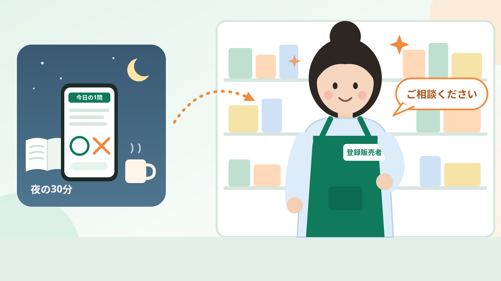
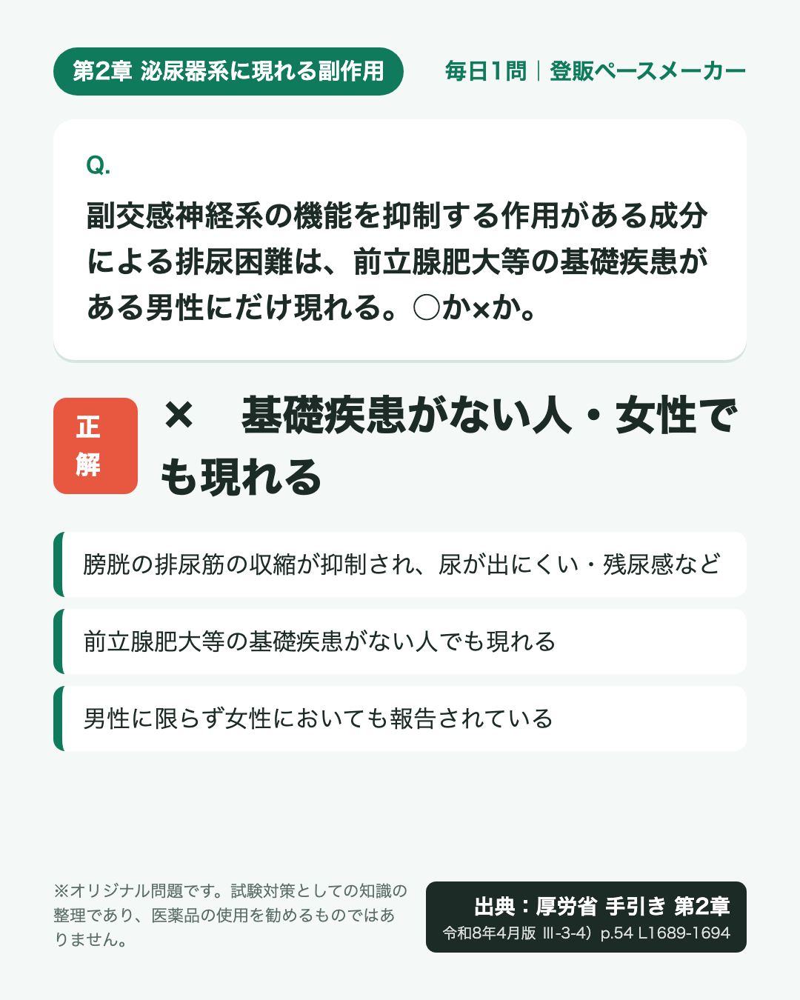
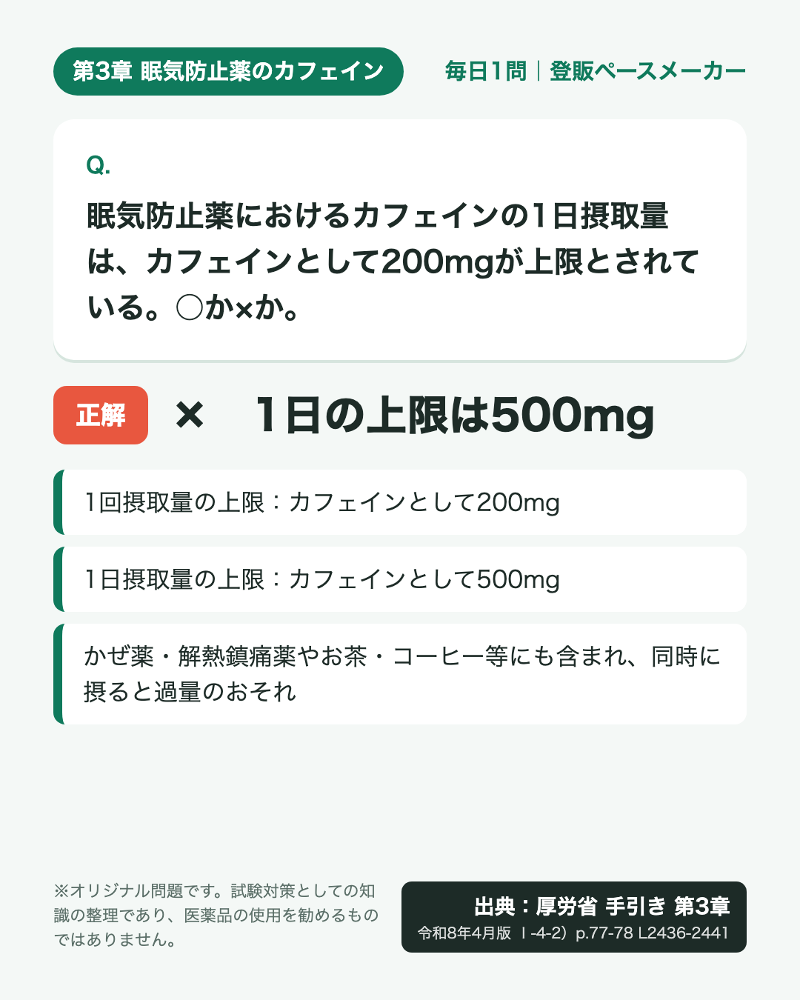

夜の30分が、
店頭での自信に。
登録販売者試験、合格までのペースのつくり方
働きながら・子育てしながら合格をめざす人へ。残り日数で今やることと、自分に合う学び方の選び方をまとめました。

イラストはイメージです
九州・沖縄ブロックの試験（2026年12月20日）まで。
いまの時期にやることは ③ 試験が近い人へ
Threadsから来てくれたあなたへ。いつも投稿を見てくれてありがとうございます。
いまのあなたは？
当てはまるところから読んでください。
1これから始める人へ
まず全体を知ると、不安は「やること」に変わります。
出典：厚生労働省「登録販売者試験の実施について」別添 登録販売者試験実施要領
試験のしくみと勉強の順番をくわしく › ひとりで計画を続けられるか不安なら講座をペースメーカー代わりにする方法もあります
2前回あと少しだった人へ
届かなかったのは、努力不足とは限りません。点を落とした章が見えていなかっただけかもしれません。
- 1章ごとに正答率を出す第3章は40問、ほかは各20問。点数ではなく割合で比べる
- 2低い章から見直す1つの章が基準を下回ると合格できないため
- 3間違いを2つに分ける「知らなかった」と「知っていたのに取り違えた」。後者は似た用語を並べて覚え直す
間違えた問題だけを解き直せる講座や、3年間視聴できる講座もあります
3試験が近い人へ
残り日数で、やることは変わります。いまの位置からの一歩だけを考えましょう。
- 90
日全体を一周第3章から始めて全5章をざっと一周。完ぺきを目指さない - 30
日弱い章を見つける章ごとに問題を解いて正答率を出し、低い章から見直す - 7
日取りこぼしを減らす新しい問題集に手を広げず、間違えた問題と第3章の成分を見直す - 前日整えて、眠る持ち物と会場・時間を確認して、早めに寝る
オレンジが、九州・沖縄ブロックの「いま」の目安です。毎日の「今やること」はThreadsで届けています。
4合格したあとのこと
Threadsで特に反応が多かったテーマです。
「合格したら、すぐ一人で売り場に立てるの？」と気になっている人へ。
出典：厚生労働省「試験問題の作成に関する手引き（令和8年4月）」第4章Ⅲ-1）・Ⅲ-2）
研修中の期間と、店舗管理者になる条件をくわしく ›5講座を使うか迷っている人へ
独学でも合格はめざせます。ただ、ひとりで計画を立てて続けるのが不安なら、講座はペースメーカーの代わりになります。選ぶ基準は「どれが良いか」より「自分の生活に合うか」です。
3つの講座を並べて比べる
| スタディング | 三幸医療カレッジ | SMART合格講座 | |
|---|---|---|---|
| 向く人 | スマホで進めたい | 紙で集中したい | 来年以降も長く学び直したい |
| 料金 | 29,800円 税込・税抜の記載なし | 35,200円（税込） | 39,600円（税込） |
| 教材 | オンライン | 紙の教材あり | 記載なし |
| 動画 | スマホ・PC・タブレット | 全78本・1年間 | 約22時間40分（スマホ） |
| 演習 | 復習モード | 練習問題集 | 一問一答の答練 約5時間 |
| 質問 | 10回分無料 | 回数無制限 | 記載なし |
| 期間 | 受ける年度で選ぶ 2026年度版：2027年1月31日まで 2027年度版：2028年1月31日まで | 1年間 | 申込日から3年間 |
| お試し | 無料体験 | 試し読み・資料請求 | 無料ユーザー登録で視聴 |
| 改訂 | 令和8年4月の改訂への対応は、各講座の公式サイトで確認を（SMART合格講座は記載なし。10/14時点） | ||
| 無料体験を見るPR・公式サイトへ | 試し読みを見るPR・公式サイトへ | 無料登録で見るPR・公式サイトへ | |
スタディング 登録販売者合格コース
2026年度試験対応（受講期限 2027年1月31日）と、2027年度試験対応（受講期限 2028年1月31日）があります
- 動画・テキスト・問題がスマホで完結
- 間違えた問題だけを解く「復習モード」
- テキストはオンラインのみ（紙の冊子なし）
- 講師への質問は10回分まで無料
こんな人に：通勤・休憩・寝る前など、まとまった時間が取りにくい人。前回の間違いを効率よく解き直したい人。
無料体験で使い心地を見るPR公式サイトへ三幸医療カレッジ 通信コース（eラーニング）
- 自宅では紙の教材で学習
- 質問は回数無制限（専用フォーム）
- 動画講義 全78本が1年間見放題
- 予想問題集は別売り
こんな人に：画面より紙のほうが頭に入る人。分からないところを納得するまで質問したい人。
テキストの試し読みを見るPR公式サイトへSMART合格講座 登録販売者
- 講義動画 約22時間40分と、一問一答の答練 約5時間（解答後に講師の解説）
- 視聴期間は申込日から3年間
- スマホで視聴できる。無料のユーザー登録で講座を試しに見られる
- 令和8年4月の手引き改訂に対応しているかは、公式サイトに記載がありません（10月14日時点）。申し込む前に確認してください
こんな人に：来年以降の試験まで、同じ講座で続けたい人。点を落とした章の講義を、聞き直したい人。
無料登録で講義を試しに見るPR公式サイトの講座一覧（登録販売者）へ申し込む前に、確認しておきたい3つ
- 受ける試験に間に合うか：受講期間と、対応している試験の年度を公式サイトで確認
- 費用を誰が出すか：職場によっては資格取得の費用を負担・補助してくれることも。上司や人事に確認
- 続けられそうか：無料体験や試し読みで、毎日開けそうかを確かめてから決める
スタディング・三幸医療カレッジは2026年10月12日、SMART合格講座は10月14日に、各社の公式サイトで確認した内容です。「記載なし」は公式サイトに書かれていなかった項目です（スタディングの質問は、追加チケットの購入で10回を超えて利用できます）。価格・内容は変わることがあるので、申し込む前に必ず公式サイトでご確認ください。合格率は、公表元や集計方法によって数字が異なるため載せていません。
よくある質問
独学でも合格をめざせる？
試験は厚労省の「試験問題の作成に関する手引き」から出題され、手引きは厚労省のサイトで誰でも読めます。独学で合格をめざす人もいます。分かれ目になりやすいのは、計画を立てて最後まで続けられるかどうかです。
働きながら・子育てしながらでも続けられる？
大切なのは、長い時間より「毎日開く」ことです。夜の30分など、決まった時間に少しずつ進める人も多くいます。Threadsの毎日の1問は、そのきっかけづくりに役立ててください。
何から勉強を始めればいい？
全120問のうち40問を占める第3章から始めるのがおすすめです。ただし章ごとに基準があるので、捨てていい章はありません。くわしくは試験のしくみと勉強の順番へ。
講座の費用は会社が出してくれる？
職場によっては、資格取得の費用を負担・補助してくれる場合があります。申し込む前に、上司や人事に確認してみてください。
申し込む前に試せる？
スタディングは無料体験、三幸医療カレッジはテキストの試し読みと資料請求、SMART合格講座は無料のユーザー登録で講座の視聴ができます（2026年10月12日・14日に各社の公式サイトで確認）。
合格したら、すぐ一人で売り場に立てる？
しばらくは「研修中の登録販売者」として、薬剤師または研修中ではない登録販売者の管理・指導のもとで働きます。くわしくは合格後の働き方へ。
試験日はいつ？
都道府県のブロックごとに異なり、各都道府県が公式に発表します。受験する都道府県の公式発表を必ず確認してください。公式発表を確認できた日程は、このページとThreadsでお知らせします。（2026年度で残っているのは、九州・沖縄ブロックの2026年12月20日（日）。福岡県・沖縄県の公式発表）
このページとアカウントの約束
- 試験の知識は、厚労省の「試験問題の作成に関する手引き」の原文と照合しています
- 投稿と図解はAIで作成し、すべて人が内容を確認してから公開しています
- 問題はオリジナル。過去問や他社教材は使っていません
- 講座の情報は、公式サイトで確認できた事実だけ。口コミや合格率は載せていません


内容は試験対策のための知識の整理です。医薬品の使用を勧めるものではありません。
自分のペースで、
続けられる形を。
まずは、気になる学び方を試すところから。
📱 スタディングの無料体験PR 📖 三幸医療カレッジの試し読みPR 🔁 SMART合格講座の無料登録PR毎日の1問は、Threadsで。
Threadsに戻る